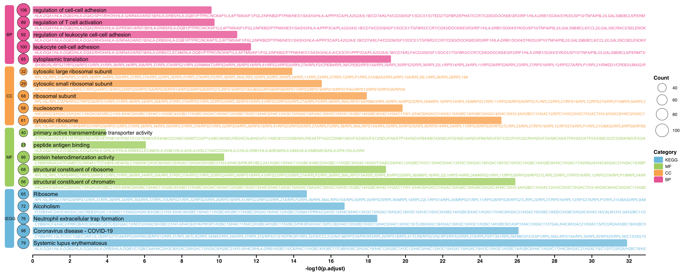

第 12 章 富集分析图
# 加载包
# devtools::install_github("dxsbiocc/gground")
library(gground)
library(ggprism)
library(tidyverse)
library(ggview)
# 加载数据
load("Rdata/ORA.RData")
GO <- go_up %>% as.data.frame()
KEGG <- kk_up %>% as.data.frame()挑选想要展示的富集分析结果
# 举例：取 top5 。根据 FDR 值排序，相同 FDR 值取富集到基因最多的通路
use_pathway <- group_by(GO, ONTOLOGY) %>%
top_n(5, wt = -p.adjust) %>%
group_by(p.adjust) %>%
top_n(1, wt = Count) %>%
rbind(
top_n(KEGG, 5, -p.adjust) %>%
group_by(p.adjust) %>%
top_n(1, wt = Count) %>%
mutate(ONTOLOGY = 'KEGG')
) %>%
ungroup() %>%
mutate(ONTOLOGY = factor(ONTOLOGY,
levels = rev(c('BP', 'CC', 'MF', 'KEGG')))) %>%
dplyr::arrange(ONTOLOGY, p.adjust) %>%
mutate(Description = factor(Description, levels = Description)) %>%
tibble::rowid_to_column('index')构造左侧标记数据
# 左侧分类标签和基因数量点图的宽度
width <- 0.5
# x 轴长度
xaxis_max <- max(-log10(use_pathway$p.adjust)) + 1
# 左侧分类标签数据
rect.data <- group_by(use_pathway, ONTOLOGY) %>%
reframe(n = n()) %>%
ungroup() %>%
mutate(
xmin = -3 * width,
xmax = -2 * width,
ymax = cumsum(n),
ymin = lag(ymax, default = 0) + 0.6,
ymax = ymax + 0.4
)绘图
# pdf('pathway.pdf', width = 10, height = 8)
pal <- c('#7bc4e2', '#acd372', '#fbb05b', '#ed6ca4')
use_pathway %>%
ggplot(aes(-log10(p.adjust), y = index, fill = ONTOLOGY)) +
geom_round_col(
aes(y = Description), width = 0.6, alpha = 0.8
) +
geom_text(
aes(x = 0.05, label = Description),
hjust = 0, size = 5
) +
geom_text(
aes(x = 0.1, label = geneID, colour = ONTOLOGY),
hjust = 0, vjust = 2.6, size = 3.5, fontface = 'italic',
show.legend = FALSE
) +
# 基因数量
geom_point(
aes(x = -width, size = Count),
shape = 21
) +
geom_text(
aes(x = -width, label = Count)
) +
scale_size_continuous(name = 'Count', range = c(5, 16)) +
# 分类标签
geom_round_rect(
aes(xmin = xmin, xmax = xmax, ymin = ymin, ymax = ymax,
fill = ONTOLOGY),
data = rect.data,
radius = unit(2, 'mm'),
inherit.aes = FALSE
) +
geom_text(
aes(x = (xmin + xmax) / 2, y = (ymin + ymax) / 2, label = ONTOLOGY),
data = rect.data,
inherit.aes = FALSE
) +
geom_segment(
aes(x = 0, y = 0, xend = xaxis_max, yend = 0),
linewidth = 1.5,
inherit.aes = FALSE
) +
labs(y = NULL) +
scale_fill_manual(name = 'Category', values = pal) +
scale_colour_manual(values = pal) +
scale_x_continuous(
breaks = seq(0, xaxis_max, 2),
expand = expansion(c(0, 0))
) +
theme_prism() +
theme(
axis.text.y = element_blank(),
axis.line = element_blank(),
axis.ticks.y = element_blank(),
legend.title = element_text()
)